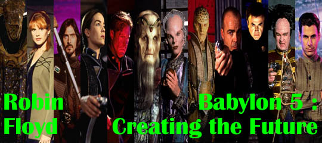

Ask ten different fans what Babylon 5 was about, and you will get fifty different answers - all of them probably valid. This is, as Lorien would say, as it should be. For a series as complex and multi-layered as Babylon 5, there will never be a single answer to this question; meaning is wherever we find it, and every viewer interprets the meaning of the story in his or her own way. What follows may be considered a follow-on to Bob Steele's earlier article, The Deconstruction of Babylon 5. While I agree with many of the points made in that article, I have inevitably drawn some different conclusions concerning what the most important themes of the story are, and felt there were some important issues which Bob did not mention.
If you are reading this, you are probably already familiar with the programme, but in the event that anyone is not, a brief introduction follows. Babylon 5 is an American science fiction television series which ran for five years, from 1993 to 1998. The series is set in the 23rd century aboard the fifth and last of the Babylon stations, and involves a large cast of characters, representing both humans and a range of alien races. Babylon 5 is unique in that rather than being simply a series of separate episodic stories, the whole series of 110 episodes tells one story over five years, which was planned in detail before a single episode was made. The intention of creator and main writer J. Michael Straczynski was to create the first genuine example of an epic novel on television. This format allowed Straczynski to tell a story of unparalleled (in television) depth and complexity.
This article examines what I consider to be the major underlying themes of the series, excluding those which Bob has already dealt with in his article. What follows is simply my own answer to the question, "what is Babylon 5 about?"
Firstly, Babylon 5 is about the future. This may appear obvious, and indeed rather uninteresting, as a great many stories have been set in the future. But the programme raises issues about the future that are not so frequently discussed. Babylon 5 is a genuine example of a "future history", as opposed to a story set in the future. The series considers process and change. It involves not only the portrayal of a possible future, but the process of how that future comes about; not only where we are going, but how we get there. This is why I chose as the title of this article "Creating the Future", from a line spoken by Kosh in the Babylon 5 prequel, 'In the Beginning'.
Babylon 5 is about many kinds of change. Over the course of the series, wars are fought, won and lost; governments fall, and new ones are founded. The centre about which the story revolves is the Shadow War a conflict between two incalculably ancient and powerful alien races, the Shadows and the Vorlons. But at the start of the series, this war has not yet begun the galaxy is temporarily at peace. The existence of the Shadows and the true nature of the Vorlons are revealed little by little, with only hints at first. Indeed, we are not told the true nature of the conflict until the episode 'Into the Fire' four years into the series. And the series continues after the war ends. Therefore, the programme is not simply a story about a war. Rather, it is the history of this war, and of the many characters and events associated with it - the events leading up to it, and its end and aftermath. The emphasis is always on process, and on change.
Furthermore, nearly all of the major characters in the series go through some kind of change. Some, like Sinclair and Delenn, undergo physical transformations. Others undergo changes in their personality or outlook, or in the roles they play. John Sheridan changes from soldier to diplomat to revolutionary to leader of the newly-founded Interstellar Alliance. G'Kar is changed by his experiences from a scheming, manipulative villain to an enlightened, self-sacrificing hero. Ivanova, Vir, Garibaldi, Zack, Lennier, Lyta and many other characters all go through changes of one kind or another, and the role they play at the end of the series is dramatically different from that at the beginning. Characters do not fall into archetypal roles such as heroes and villains (or if they appear to, one can be certain they will not remain in those roles for long). Some characters live, and others die. In the longer term, we see changes in the very nature of humanity first with the appearance of telepaths, and in the one million year flash-forward in 'The Deconstruction of Falling Stars', we see humanity transformed into beings of pure energy. Only one thing is certain: change is inevitable. Babylon 5 tells us that we should not fear change or fight against it, because, as John Sheridan says in the penultimate episode 'Objects at Rest, "life is change."
History does not create itself; the future is determined by the decisions and actions of individuals. One single choice, made by one single person, can change the universe, for better or worse. This simple point expresses one of Babylon 5's most important themes; in typical Babylon 5 fashion, this message is hidden in plain sight, expressed as a line of dialogue in the very first episode ('The Gathering'), where Delenn refers to "the power of one mind to change the universe".
The series tells us that we, as conscious beings, have choices. It also tells us that those choices have consequences, for ourselves and for others. And - the part most difficult to accept, but most important to understand - it tells us that those who make choices are responsible for their consequences. These three issues - choices, consequences and responsibility - underlie the whole series, and I will list a few of the characters and events in the story which illustrate this theme.
The power to choose and to make a difference is not always the same thing as political power or rank. In the episode 'The Coming of Shadows', the elderly Centauri Emperor tells Sheridan:
"It has occurred to me recently that I have never chosen anything. I was born into a role that had been prepared for me; I did as I was instructed; married who I was told to marry; took up the role of emperor when my father died... I did all I was asked, because it never occurred to me to choose otherwise. And now, at the end of my life, I wonder what might have been."
Another character whose story is bound up with choices, consequences and responsibility is Londo Mollari. He begins the series as the Centauri ambassador to the station; he dreams of seeing his people returned to power and glory, but he is out of favour in the Centauri royal court. The Centauri are bitter rivals with another alien race, the Narn. The conflict between the two races goes back centuries, and though they are at peace at the beginning of the series, war does not seem far away. Londo makes a decision to ask for the assistance of the Shadows, a mysterious and powerful group of aliens. This choice results in a terrible war between the Narn and the Centauri, with the loss of millions of lives. As a result of Londo's choice, the Narn homeworld, and eventually the Centauri homeworld too, are devastated.
In the pivotal episode 'The Coming of Shadows', when Londo makes the decision to ask for the Shadows' help, his assistant, Vir, begs him to reconsider. Londo replies "I have no choice". Of course, he is wrong. He has a choice, he has simply made it. It is easier for him to live with his actions in the belief that he could not choose otherwise; that it was his obligation to his people, that any opportunity to eliminate their enemy the Narn had to be taken. There is a strong contrast with the words of the Centauri emperor in the same episode, who is only aware at the end of his life that he had the power to choose; Londo, by contrast, has the power but believes, or pretends to believe, that he does not. This is his tragic error ; like Shakespeare's Macbeth, he assumes that he can commit evil deeds in order to gain a desirable end, then put it behind him in other words, to make choices without considering the consequences, and therefore without taking responsibility. Both characters believe that it is their duty to achieve these ends, and therefore that they have no choice other than to act as they do and this mistake destroys Londo as it did Macbeth.
Soon after, in the episode 'Knives', we see the first indications that Londo is beginning to regret the choices he has made, when the alliances he has made within the Centauri government cost the life of his friend Urza Jaddo. Again, Vir asks him to undo the choices he has made and take a different path. But Londo believes it is too late to change: "The blood is already on my hands. Right or wrong, I must follow the path to its end." These words echo the following speech from Macbeth Act III, scene 5: "I am in blood / Stepped in so far that, should I wade no more, / Returning were as tedious as go o'er." Both characters reason that they have already committed so many evil deeds that they cannot change their course even if they want to.
Londo does not realise his error until the Shadows come to Centauri Prime in 'The Hour of the Wolf'. Their presence puts the whole planet at risk, as the Vorlons are destroying any world containing even traces of the Shadows. Londo finally turns against the Shadows, and does whatever is necessary to remove them, which includes making a deal with his former enemy, the Narn G'Kar, and assassinating the insane Emperor Cartagia. He is successful, but will later discover that the Shadows had allies who will seek revenge.
In the fourth season episode 'No Surrender, No Retreat', Londo attempts to make peace with G'Kar. Londo's words indicate how far his character has changed:
"I have made some very poor choices these last two years. Because I did not think, those choices almost destroyed my world, and yours. That is a humbling realisation... If, with a single wrong word, I can become the enemy, do I any longer really understand who the enemy is?"
Then, in 'The Fall of Centauri Prime', Londo finally reaches his tragic fate. He becomes emperor of the Centauri, but, thanks to the retaliation of the Narn and the Drazi, of a ruined world and a defeated people, as a puppet ruler manipulated by the Drakh (former servants of the Shadows). Because of the poor choices he made when he believed he had no choice, he has finally ended up in a position where he has no choices left. Londo summarises the irony of his story in a conversation with G'Kar:
"Isn't it strange, G'Kar? When we first met, I had no power, and all the choices I could ever want. Now I have all the power I could ever want, and no choices at all."
G'Kar's story mirrors Londo's in many ways except that G'Kar makes crucially different choices from Londo. Initially, G'Kar has the same hatred of the Centauri that the Centauri have of his people, and he is similarly dedicated to destroying them ('Signs and Portents'). But in 'Dust to Dust', Vorlon ambassador Kosh (assuming the image of a Narn) tells him:
"We are a dying people, G'Kar. So are the Centauri: obsessed with each other's death until death is all we can see, and death is all we deserve... You have the opportunity, here and now, to choose, to become something greater and nobler and more difficult than you have ever been before."
Thus G'Kar chooses to change his path, to act for the common good of all life and not just his own race. Most of Babylon 5's characters go through this cycle of choices, consequences and responsibility in some way. Zack Allen has to choose between his loyalty to Nightwatch and to his friends ('Point of No Return'). Delenn chooses to enter the Chrysalis which transforms her into a hybrid of human and Minbari ('Chrysalis'). Sheridan chooses not to accept the corrupt rule of President Clark, and leads a revolution against him - the consequence of which is the formation of the Interstellar Alliance, forever changing the Galaxy. What makes Londo ultimately a 'villain' of the story is that he does not truly understand until too late that the he has the power to choose one course or another. What makes characters such as Sheridan and Delenn 'heroes' is that they make choices while accepting responsibility for the consequences, and they recognise the power of one mind to change the Universe.
In 'And Now for a Word', Delenn makes the following speech:
"Humans share one unique quality: they build communities. If the Narns or the Centauri or any other race had built a station like this, it would be used only by their own people. But everywhere humans go, they create communities out of diverse and sometimes hostile populations. It is a great gift, and a terrible responsibility - one that cannot be abandoned."
In the story, humans are unique among races in this quality, and it is humans who unite the disparate races of the galaxy- first against the Shadows and Vorlons, and then into the Interstellar Alliance. Communities are at the heart of Babylon 5 the idea that we are all part of some larger community, be it an organisation, nationality, the human species or life as a whole. A community's strength comes from its diverse elements, united by some common condition. And a community must not work for its own good at the expense of others, for all communities are part of a larger community still, which progresses by mutual co-operation and respect, and harmed by hatred, distrust and war. Babylon 5 constantly emphasises the fundamental unity of sentient beings as the universe grown to consciousness (as discussed in Bob's article). The Interstellar Alliance's declaration of principles, written by G'Kar ('The Paragon of Animals'), makes the same point:
"The universe speaks in many languages, but only in one voice...it is the voice of our ancestors speaking through us, and the voice of our inheritors waiting to be born. It is the small, still voice that says 'we are one.' No matter the blood, no matter the skin, no matter the world, no matter the star, we are one..."
Characters in Babylon 5 are distinguished by the scale of their vision. Some can only see the good of their own people, and these are the ones who fail or are destroyed despite their intentions. Londo is an example of such a character: he is dedicated to his own people, and does not care about the good of any other race. And yet, in the end, his world is ruined and his people defeated. Similarly, Psi Cop Alfred Bester is totally dedicated to his people, whom he defines as telepaths. To him, humans who are not telepaths are not his people; they are the enemy. This is why an otherwise decent and even courageous man becomes a ruthless villain, who thinks nothing of manipulating, torturing and killing normal humans if it is in the interests his 'own kind' (see the Psi Corps Trilogy of novels by J. Gregory Keyes for a more detailed exploration of Bester's character and the history of telepaths than is seen in the TV series). President Clark and his followers seek to isolate Earth from alien influences, but only succeed in turning human society in upon itself, stifling freedom and happiness. In general, the characters who are seen as 'evil' in Babylon 5 are those who act in the interests of themselves or of what they see as 'their people' at the expense of others. The characters who rise to greatness (such as G'Kar, Sheridan, Delenn and Sinclair) are those with a vision beyond the good of themselves or their own, because they understand that each group or race is only a part of the larger community of life: as Kosh tells G'Kar in 'Dust to Dust',
"What is there left for Narn if all of creation falls around us? There is nothing: no hope, no dream, no future, no life - unless we turn from the cycle of death towards something greater... We are fighting to save one another. We must realise we are not alone. We rise and fall together, and some of us must be sacrificed if all are to be saved."
Therefore, the series tells us that anything which appears to benefit one race or group, but harms others, harms the whole community of races, and in the end inevitably harms the race which was supposed to benefit. It is a message which applies to human beings in the real world as much as it does to fictional alien races in the Babylon 5 universe: we divide, factionalise and tribalise ourselves based on culture, language or beliefs. But conflict, exploitation and hatred ultimately harm all, and benefit none, because of that fundamental truth of human existence of which Babylon 5 reminds us: we are one.
"Those who cannot remember the past are condemned to repeat it" says Susan Ivanova in the episode 'Infection', quoting the American philosopher George Santayana. This phrase sums up another of Babylon 5's important themes that if we do not learn from the mistakes of the past, we will make them all over again. This is seen in the series in various ways. The fictional history of the Babylon 5 universe shows a cyclical pattern the Shadows and Vorlons have fought out the same war every few millennia for over a million years ('In the Shadow of Z'ha'dum'). As Sheridan tells them in 'Into the Fire', "You're trapped in this cycle as much as we are." Similarly, the Centauri invade the Narn homeworld and withdraw from it not once, but twice, and each time the Narn thirst for vengeance blinds them to all else (except for G'Kar, who tries in vain to turn his people away from revenge after the second invasion).
Moreover, many aspects of Babylon 5's storyline mirror real events from our own history. The Centauri, for example, are loosely based on the Roman Empire, and the mad emperor Cartagia is based upon the similarly insane Roman emperor Caligula. Vir, Londo's nervous, and seemingly cowardly assistant who is thought of as a fool by almost everyone yet eventually becomes emperor himself, parallels the Roman emperor Claudius.
Other aspects of the story parallel more recent history, for example the Second World War. As the Centauri aggression escalates in 'The Fall of Night', Earth's government chooses not to involve itself, and signs a nonaggression treaty with the Centauri, thus giving the Centauri free reign to invade other worlds so long as none of Earth's territories are threatened. Mr Lantz, the diplomat who signs the treaty, says, ironically, "We will at last know peace in our time." These words deliberately echo those of Neville Chamberlain when he signed a peace agreement with Nazi Germany in 1938: "I believe it is peace for our time." This agreement similarly abandoned Britain's allies in Europe, such as Czechoslovakia, to German aggression. On another occasion ('In the Shadow of Z'ha'dum'), Captain Sheridan tells the story of how Winston Churchill allegedly knew of the bombing of Coventry several days before it happened, but did not order the town evacuated as this would have revealed to the Germans that their code had been broken, which could have cost the Allies the war. This paralleled Sheridan's own situation, as he face a choice between acting against Mr Morden, an agent of the Shadows, and thus exposing his knowledge about them (which would cause the Shadows to go on the offensive), and failing to act and thus keeping his knowledge secret. Sheridan chose not to act, thus leading the Shadows to believe that their presence was still unknown, and giving Sheridan and Delenn time to build up their own forces against them.
In 'Chrysalis', Earth Alliance president Santiago is killed in an explosion that appears to be an accident. He is succeeded by his vice-president, Clark, who is later revealed to have planned the explosion. This echoes the fate of President John F. Kennedy, who was assassinated in 1963 as part of what many people believe was a conspiracy within the US establishment. President Clark uses the threat of "alien influences" to bring about major changes in Earth's government and military, supposedly for the protection of humans against alien threats, but in fact to set himself up as a dictator. He creates organisations such as the Ministry of Peace, the Ministry of Truth and the Nightwatch, to support his power. Nightwatch begin to crack down on sedition, which in reality means that anyone expressing views contrary to President Clark is considered to be a traitor and arrested. There are clear parallels with the Nazi Party in Germany, and with the US Communist witch-hunts of the 1950s. The members of Nightwatch are ordinary citizens, as are the people willing to name names, manipulated by their fear of an "enemy" into supporting a system which oppresses others. The purpose is to remind us of how such things happen, as it is all too easy to look at Nazi Germany and believe that "it could never happen here" Babylon 5 tells us that the moment when we believe it could never happen is the moment we are most in danger of allowing it to happen. In 'Nightwatch', the sereis shows us the birth, development and death of a fascist organisation, which acts as both a demonstration of Santayana's principle, and a timely reminder of how such things happen, thus perhaps helping us to avoid the temptations of such groups in real life.
A similar point is made in the following speech by William Edgars in "The Exercise of Vital Powers":
"Nobody takes power. They're given power by the rest of us, because we're stupid, or afraid, or both. The Germans in 1939, the Russians in 1917 and 2013... They handed over power to people they thought could settle scores, get the trains running on time, restore their prestige... Afterwards, like children who have eaten too much candy after dinner, they denied it was their fault, claimed that it was them. It's always them. Today, President Clark has the power, and we gave it to him, because we're afraid of the aliens and afraid of ourselves."
Edgars makes the point that the real reason why corrupt, totalitarian regimes come into power is because ordinary people let it happen, either because they genuinely believe in their leaders or because they are afraid to oppose authority. These ideas are developed further in 'Intersections in Real Time', an episode with some similarities to the interrogation sequence in George Orwell's 1984. Sheridan is captured by President Clark's forces, who try to coerce him into signing a false confession through torture and brainwashing techniques. The Interrogator begins by saying:
"I am not the enemy. To be the enemy I must have some personal stake in what happens to you. I'm not interested in that at all. I'm here to do a job, nothing more. You are a name, a file, a case number, that is all. I have no desire to inflict pain but I will do so, when and as it is required. The level of discomfort you experience will be entirely up to you."
The Interrogator is not a brutal or evil person. Indeed, everything about him his appearance, mannerisms and language suggest a completely ordinary man, the sort of man one would expect to see waiting at a bus stop or working in an office, who probably goes home to dinner with his wife and children after the day's work is done. Yet this man's job is to torture political prisoners for the government. Why would an ordinary man do this? Because he is able to distance himself from the reality of what he does by claiming that he has no personal interest in what happens to Sheridan he is just doing his job. By this reasoning, if Sheridan refuses to cooperate, then it is his own fault if he suffers.
The Interrogator tries to confuse Sheridan by undermining what he believes: "The truth is sometimes what you believe it to be, and other times what you decide it to be," he says. "My task is to make you decide to believe differently." His goal is to convince Sheridan of what he calls "The pre-eminent truth of our time: that you cannot beat the system." The Interrogator himself has accepted this truth. He believes he has no choice, and therefore no responsibility. But this returns us to that other fundamental theme of Babylon 5: choices, consequences and responsibility. The Interrogator is wrong: the programme tells us that everyone has a choice, and everyone can make a difference; therefore, everyone has responsibility. In denying this, the Interrogator is really the one who has broken. He has the choice to resist, like Sheridan does, what he sees as wrong (and many times during the episode his manner hints that he feels uncomfortable doing what he does). But he does not resist: it is easier to accept "the pre-eminent truth of our time", which is whatever those in power say it is. The poison in the sandwich is a symbol of this: by swallowing a little poison every day, the Interrogator builds up a resistance to it until he can swallow large amounts with no effect. Similarly, by believing lies and propaganda one bit at a time, he eventually believes whatever he is told by his superiors.
This, as William Edgars said, is the real reason why totalitarian regimes survive: because ordinary people allow them to, because they do not accept responsibility. In Nazi Germany, it was ordinary German citizens who worked in offices and factories, kept the trains running, and spied on their neighbours. Without their co-operation the holocaust could never have happened - but, like the Interrogator in this episode, as far as they were concerned they were only doing their jobs. And, sadly, atrocities committed by governments with the support of ordinary people are not confined to the past, as we can see today in countries such as Serbia and Iraq. Babylon 5, therefore, warns us what a dangerous mistake it is to allow ourselves to think that we cannot change anything, that we must settle for what is; and it reminds us that we must always fight for what we believe in. We always have a choice, and we are all responsible for the way things are.
I will end with a discussion of symbolism in Babylon 5. There are many examples (such as the poison in 'Intersections in Real Time', discussed above), but here I will consider just one, which runs through the whole series: the connection between light and life.
Perhaps the first example of the significance of light is seen in the Narn religious ceremony in 'By Any Means Necessary' a vital part of this ceremony is that it must be performed in the first rays of sunlight that touch the G'Quon mountain on Narn. The ceremony is a reaffirmation of life, and a reminder of its connection to the universe.
To the Minbari, the candle flame is a symbol of life. Many times during the series we see Delenn or Lennier praying or meditating before a lone candle. The meaning of this image is finally made explicit in one of the last episodes, 'And All My Dreams, Torn Asunder'. As Delenn meditates before a candle, Sheridan enters and asks her what it represents. She replies:
"Life... All life, every life. We are all born as molecules in the hearts of a billion stars molecules that do not understand politics, policies, differences. Over a billion years, we foolish molecules forget who we are, and where we came from. In desperate acts of ego, we give ourselves names, fight over lines on maps, and pretend that our light is better than everyone else's.
The flame reminds us of the piece of those stars that lives on inside us, the spark that tells us, "You should know better." The flame also reminds us that life is precious, as each flame is unique. When it goes out it is gone forever, and there will never be another quite like it."
There is a clear connection to one of Babylon 5's most important themes, that life is the embodiment of a conscious universe. The candle symbolises both life, and the connection between life and the Universe.
Similar images are invoked by the mantra of the Grey Council, the mysterious leaders of the Minbari (first heard in 'Babylon Squared'): "We are grey. We stand between the darkness and the light...between the candle and the star." As we have already seen, light stands for life; by implication, darkness stands for death. The Grey Council, therefore, see themselves as the guardians of life standing between life and death. In the second part of the speech, the candle represents life as it is today, while the star represents the source of life in the early universe. By saying that they stand between these two things, the Grey Council may mean that they are in some sense separated from the rest of life, occuping a different spiritual plane perhaps that they are more closely connected to the universe than other beings.
The fact that the final episode of the series is entitled "Sleeping in Light" indicates the importance of the symbol of light in the story. In this episode, at the end of his life, Sheridan travels into space one last time. He meets Lorien, the oldest sentient being in the universe, who tells him: "This journey has ended. Another begins." At this point, whether Sheridan dies, or something altogether stranger happens to him, is left ambiguous. He disappears and is never seen again. At the end, Delenn watches the sunrise on Minbar and, for a moment, she sees Sheridan sitting next to her as though he were still alive. The implication is that Sheridan has, in some sense, become part of the universe again he has returned to the stars which were the birthplace of all life. Perhaps the light from the sun carries with it some vestige of Sheridan's soul, and this is what Delenn is seeing. Light, as before, symbolises life, and also continuity. Life always goes on: as every journey ends, another begins.
'The Deconstruction of Falling Stars' gives us a glimpse one million years into the future of the Babylon 5 universe. Earth's sun is about to explode, and the human race is moving to a new home. A computer stores a record of the past, and the last human to leave says:
"This is how the world ends: swallowed in fire, but not in darkness. You will live on, the voice of all our ancestors, the voice of our fathers and our mothers to the last generation. We created the world we think you would have wanted for us, and now we leave the cradle for the last time."
The Earth is destroyed, swallowed in the explosion of the sun "but not in darkness", as the future human says, which again signifies the fact that life goes on nonetheless. The rest of this speech embodies the hope which the story of Babylon 5 ultimately conveys that our descendants can indeed learn from us and create a better future.
Babylon 5 is a story about the future and the past; about how we got here, and where we are going. It tells us that we should not fear change, for change is part of life. It tells us that we must never forget the past, for if we do we will never learn from our mistakes. It tells us that our choices determine the future; that we are not powerless, but with power comes terrible responsibility; and that we must therefore create the future we want, or others will do it for us. It tells us that we should respect diversity, and remember that there are far more things which unite us than drive us apart. Finally, it tells us that despite all the mistakes we make and everything that can go wrong, things can still work out in the end. Despite its tragic elements and the fact that not all characters are destined for a happy ending, Babylon 5 is ultimately a story about hope. As long as life goes on there can always be new beginnings, and as long as our species continues, our children may yet learn from our mistakes and build a better world.
These are my answers to the question of what Babylon 5 was about. I am confident that most, if not all of these themes are "correct" in the sense that Straczynski specifically intended to make these points when writing the series. But I do not believe for a moment that I have covered everything of note about Babylon 5 there are many other possible answers. My advice to anyone who is interested is to watch the series for yourself if you have not already done so: draw your own meaning from it, and decide for yourself what the series is about. I will be quite happy if the answers you reach are entirely different from my own.
The Lurker's Guide to Babylon 5 - the definitive website, containing all the information about the series you could want.
The Babylon File, Andy Lane (1997), Virgin Publishing - another useful reference, less thorough than the Lurker's Guide, but being a book rather that a website it may be more accessible.
Dark Genesis (1998), Deadly Relations (1999), J. Gregory Keyes, Del Rey - the first two books in the Psi Corps Trilogy of novels (book 3 should be released in July/August 1999), which are set prior to the series and reveal much of the background to the Telepath storyline.
The Coming of Shadows Scriptbook, J. Michael Straczynski (1998), Boxtree - contains the script to one of Babylon 5 's best episodes, and also a lengthy introduction by JMS, which reveals much about his reasons for creating the series and his intentions behind it.
The Official Babylon 5 Magazine is published monthly by Titan Magazines, and contains much information (Issue 10 featured a discussion of Londo and G'Kar which was useful in writing this article).
Babylon 5 : Creating the Future © Robin Floyd, July 1999
Got a comment?
Zap it to Rastus